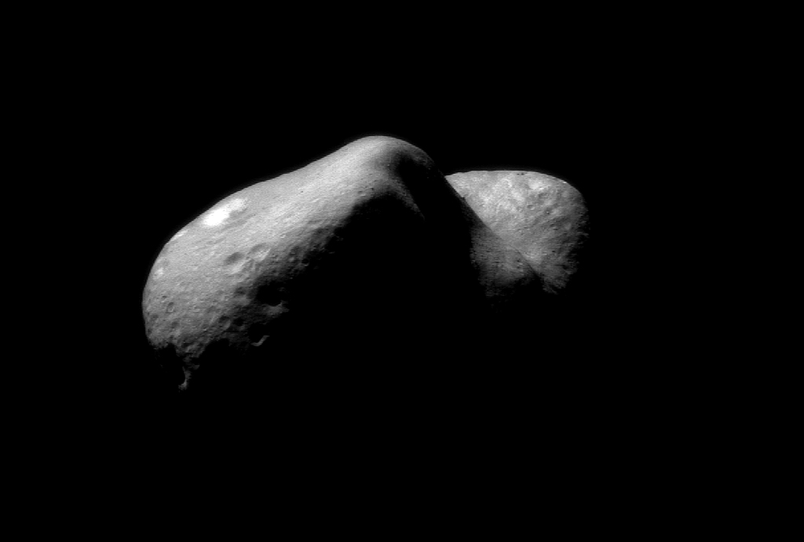

Земята е третата планета в Слънчевата система. Тя е най-голямата от земеподобните планети и единствената, на която според съвременните научни схващания има живот. Земята се е образувала преди около 4,54 милиарда години и скоро след това е придобила единствения си естествен спътник – Луната.Астероидният пояс е област в Слънчевата система, простираща се най-общо между орбитите на Марс и Юпитер. За нея е характерна най-голямата концентрация на астероиди. Поясът бива наричан още основен пояс, за да се разграничи от области с множество малки планети, като пояса на Кайпер например.
Счита се, че планетите в Слънчевата система са се формирали през първите няколко милиона години от съществуването ѝ чрез „кондензация“ на материал от първичната слънчева мъглявина в протопланети. Впоследствие голяма част от протопланетите са се сблъскали и формирали значително по-големи тела, като например съвременните земеподобни планети и ядрата на газовите гиганти.
Още информация за Астероидния пояс
